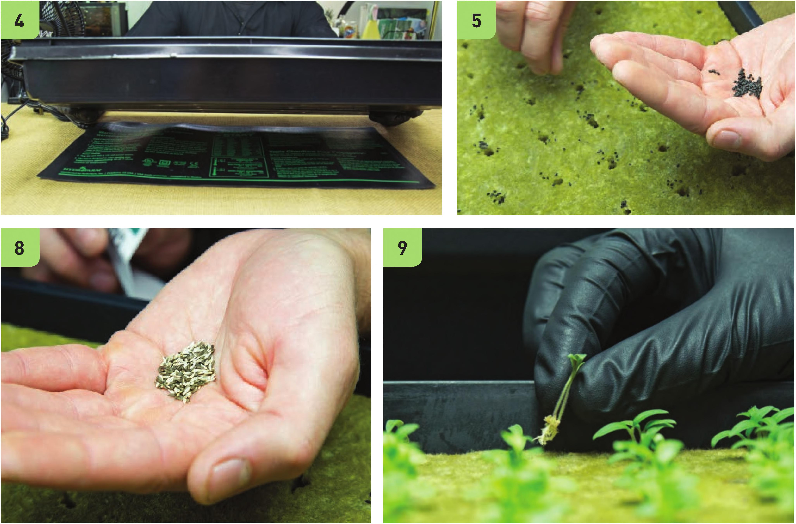

5 Seed that sheet. 6 Pelleted seeds should be seeded one per plug. 7 Basil often yields more when three to eight seeds are used per plug. Basil will often germinate great even when not placed directly in a dibbled hole. 8 Lettuce mixes using raw seed (not pelleted) yield more and look better when three to five seeds are used per plug. 9 Plants like tomatoes, peppers, cucumbers, and eggplant should be seeded two per plug if possible. Once the seedlings emerge, identify the smaller plant in the plug and remove it by pinching and pulling. Using two seeds per plug and removing one later increases the chances of having successful seedlings in every plug. If one seed doesn't germinate, then there is a backup. 10 Label your varieties. Use plant markers or make a note on a sheet of paper; either way, it is important to keep track of what varieties you plant. 11 Misting the seeds can help ensure they have good contact with the stone wool and have enough moisture to germinate. Misting is very helpful with pelleted seeds because sometimes they struggle to absorb enough moisture by simply making contact with the stone wool. STARTING SEEDS AND CUTTINGS 139
